In the second week of January I had a trip planned to Bangalore. The
main goal here was to figure out some work in Bangalore and college.
However during the Sandakphu trek some of the trekkers there
convinced me that Western Ghats is amazing and that I should
absolutely trek the Kumarparvatha thing. Its long, its challenging,
its fun.
I had another trek planned with some of my Bangalore friends. So, I
had to figure out how to squeeze these two treks in a single weekend as
I was traveling during the middle of the week for cheaper tickets. On
top of this Richard Stallman came to India during that weekend (I got
super lucky tbh) and I could attend his talk in person.
The Plan¶
Everyone said that Kumaraparvatha is a two day trek. Now I did not
have 2 days to spare. I had to fit 2 treks in the weekend.
I had divided the weekend into two parts; Part 1, the trek to
Kumaraparvatha and Part 2, the trek to Savandurga. My plan was
flawless. The plan was to work from home on Friday and take an
overnight bus to Kukke-Subramanya and start the trek, trek for the day
and return to Kukke by Saturday eveing just in time to board a bus to
Bangalore. Reach Bangalore early morning and then head off to meet
the other group for the Savandurga trek. Then finish the Savandurga
trek by 1800 hrs and get back home.
Things clearly did not go as planned. They never do.
So.. Kumaraparvatha ..¶
Friday turned out to be the day when Richard Stallman was giving the
talk at RVCE. I HAD to attend it. So, did that; which got over at
15:00 hrs. The bus was at 20:00. I had 7 hours. I needed to finish
some work as well. Went to a friends house and left some of my stuff
(the laptop) there. I had assumed that I would leave for the trek well
rested, but by the time I was in the bus, i was carrying 7 hours of
extra sweat.
All said and done I met with Sonakshi and Niranjan at Majestic at the
stipulated time . We had 2 idlis for dinner. I was under the
impression that I would be able to get bananas from Kukke-Subramanya but
I was mistaken. In the morning none of the shops would be open. So, the
others made me buy the wonder fruit. We also got a bunch of peanut
brittles.
The bus started on time, but it reached Kukke-Subramanya at 0430 hrs in
the morning. This was almost an hour before my schedule. We decided
not to waste too much time and hit the trail right away.
It was pitch dark and my head lamp was not working. We figured out a
way to make it work with me walking in the middle of the group and
using the torch on my powerbank. I did not want to use my phone as a
torch because I was recording the entire trek in OSMAND with
continuous logging.
We reached Buttaramane soon enough. We stopped there for some time for
food and the loo. We also filled our water bottles. I had to brush my
teeth due to peer pressure. We had some lemon rice and got three
plates packed to carry with us. The forest office was nearby from here.
At the forest office we had to pay for entry and had to get our bags
inspected We could also leave some stuff at the forest office so as to
reduce the load that we would be carrying. I didn't leave anything
behind. I was kinda-sorta training for the next trek.
The trek was amazing. It is a pretty trek. We were not trekking for
the view anyway. The thing I like about Kumaraparvatha is the
challenge. It is a long trek. 12kms in one direction. Generally
people hike up to the forest office in a day and use the next day to
trek up-to the peak and back. The forest officials do not allow anyone
into the forest after 12 noon. Its almost 6 kms to the peak from the
forest office, and also more technical, so if you do not start from
the forest office before 12 noon, it can get dangerous.
In this photo we have Sonakshi and Niranjan far into the frame.
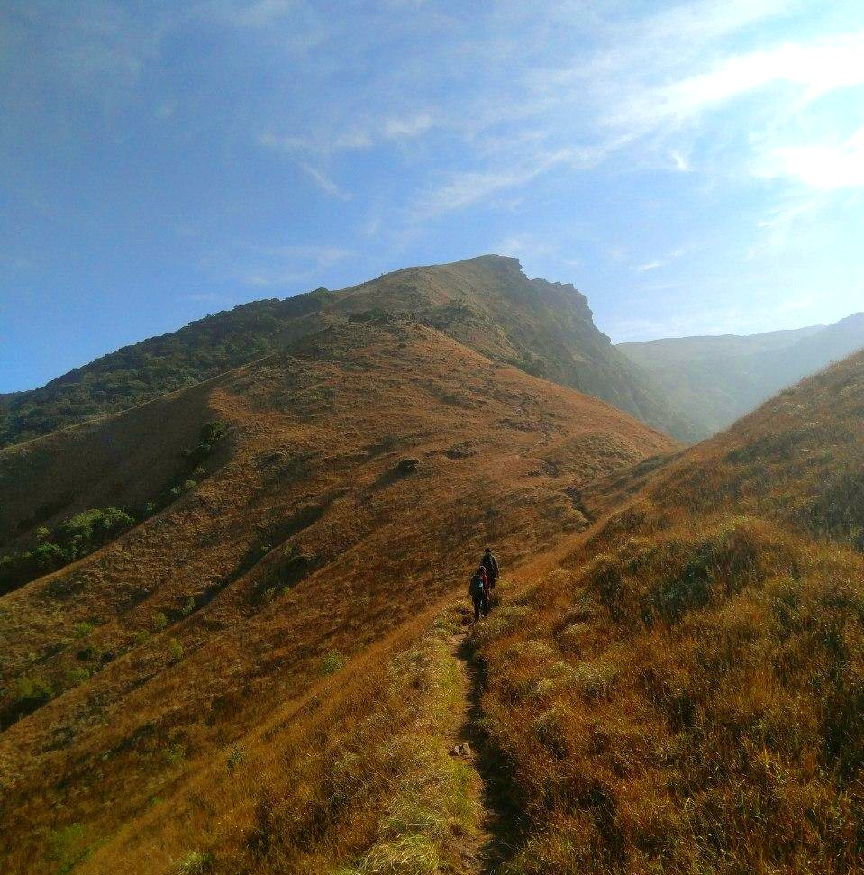
On the way to the top there is a section where you come across a steep
rock-face which looked inviting. But Sonakshi and Niranjan being the
saner members of the group stopped me from climbing via that route. I
was disappointed.
The Big rock face is question. (it is Not as steep as it looks)
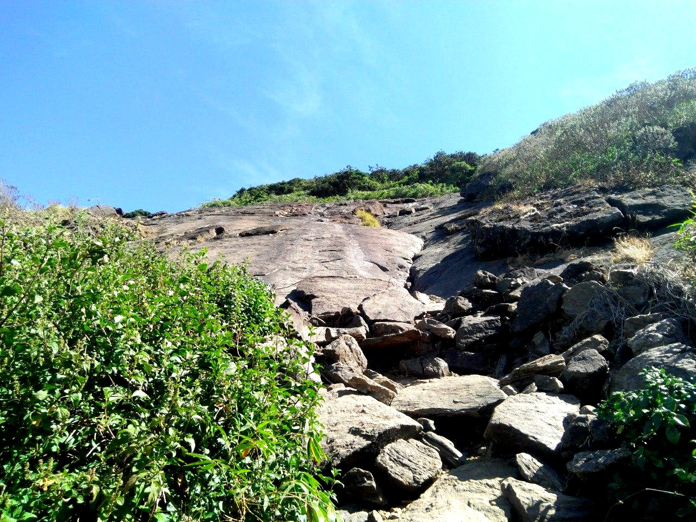
We reached the top in about 6 hours. We slept for a very very short
time and had the packed food before starting back. By this time it was
afternoon and the sun was over our heads. We did not have too much
water with us as well.
We took some photos from the somewhere near the top
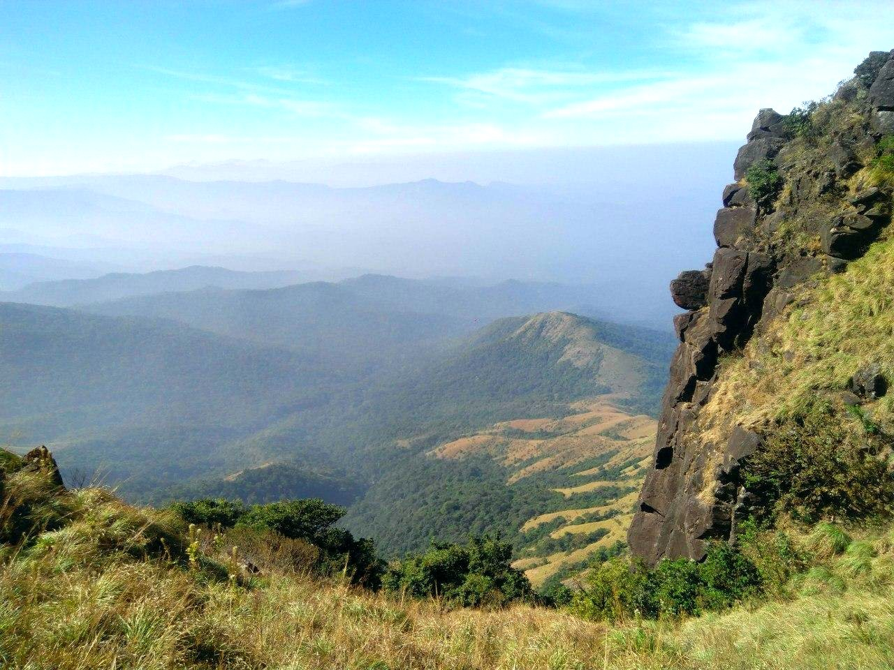
This is the other side from the same location
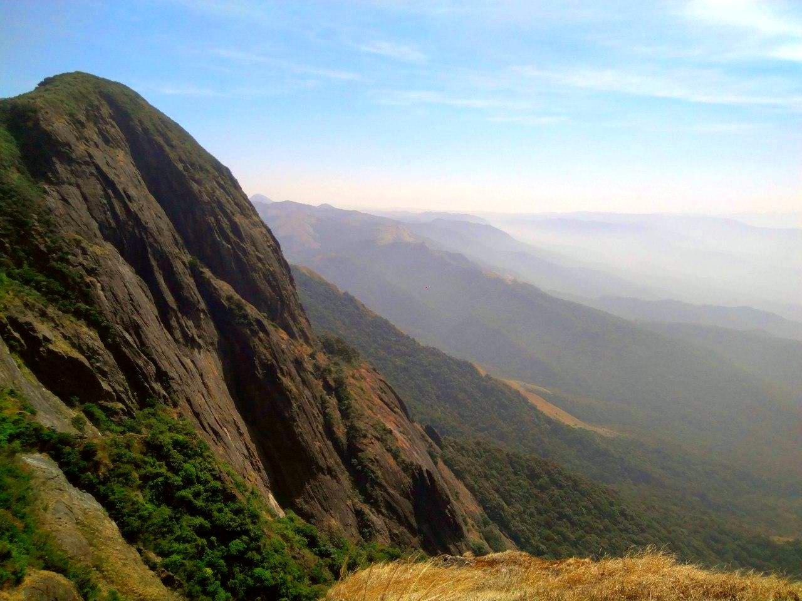
The first part of the descent was somewhat difficult because of the
heat, and we ran out of water just before reaching Buttaramane but
nothing too much. I got disoriented a bit and kept slippin. A banana
fixed it. We waited at the forest office for some time and then headed
to Buttaramane. We refilled our bottles here and started off
again. From then the journey was fun. We kept descending at a faster
pace, we were almost running downhill. We took a detour went to a
stream nearby. Dipping our feet in the stream felt amazing. We waited
for about half an hour here before leaving.
We exited the forest at about 1800 hours. Our bus was at 22:30 hrs, so
we had a bunch of hours to kill. We jumped around for a bit
legitimately impressed by our pace. The experienced folks told me that
our pace was impressive. I trusted them.
We had some food, sat on the road, and got kicked out of a restaurant.
Then we boarded the bus and slept.
We reached Bangalore quite early. I was trying to convince Sonakshi
and Niranjan to come to the Savandurga trek with me but I was not
successful. Niranjan said he would come. Then Sonakshi went her way,
while me and Niranjan headed to his place. We were planning to freshen up
(no showering) and then head to the meetup location for Savandurga. In
the end Niranjan also ditched me. I removed the base layer I was
wearing. That improved the smell a tiny bit. I left Niranjans place
and then had a friend pick me up on the rental car that we booked for
Savandurga. I got lucky logistically.
Let's end this section with a picture of team Kumaraparvatha.
TEAM Kumaraparvatha!!
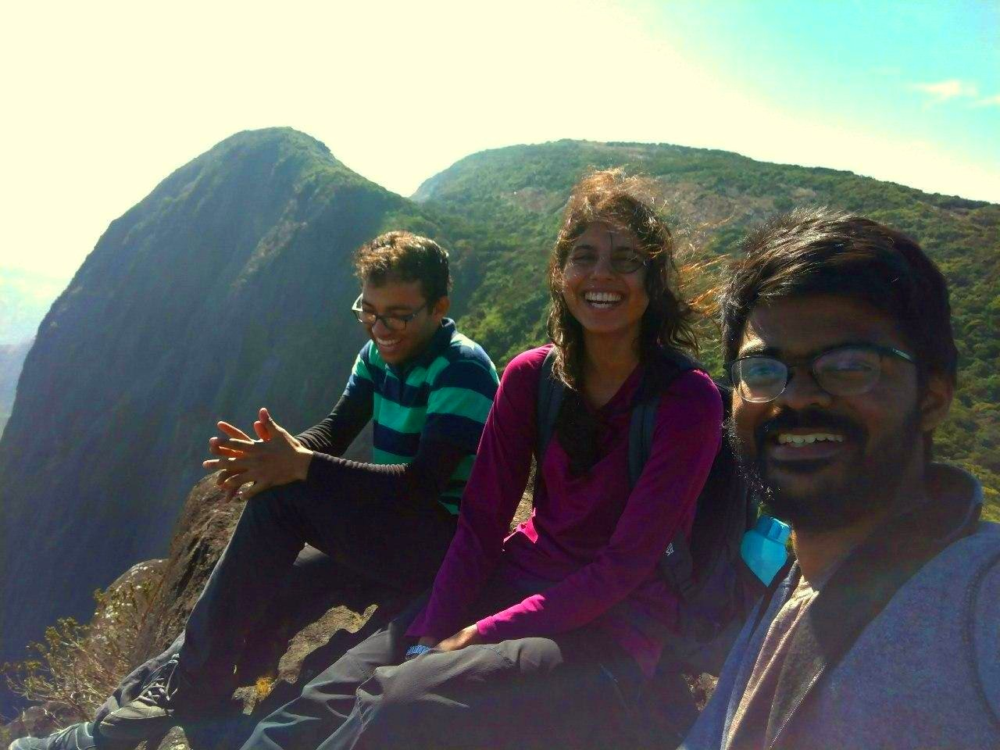
Part 2 .. Savandurga..¶
My friend and I met with the rest of the group at 10:00 hrs which was
1 hours later than our plan. Anyway, we said our hellos and started.
The drive wasn't that bad. We stopped on the middle for some food and
stuff to pack.
The road to Savandurga (via Magdi Road) is just beautiful. This was a
familiar route since I had cycled through the same road about a year
back. We could see the hill as we started to approach it. Some of the
team members expressed their concerns over the difficulty of what
awaited them.
This is how Savndurga looks from the road.
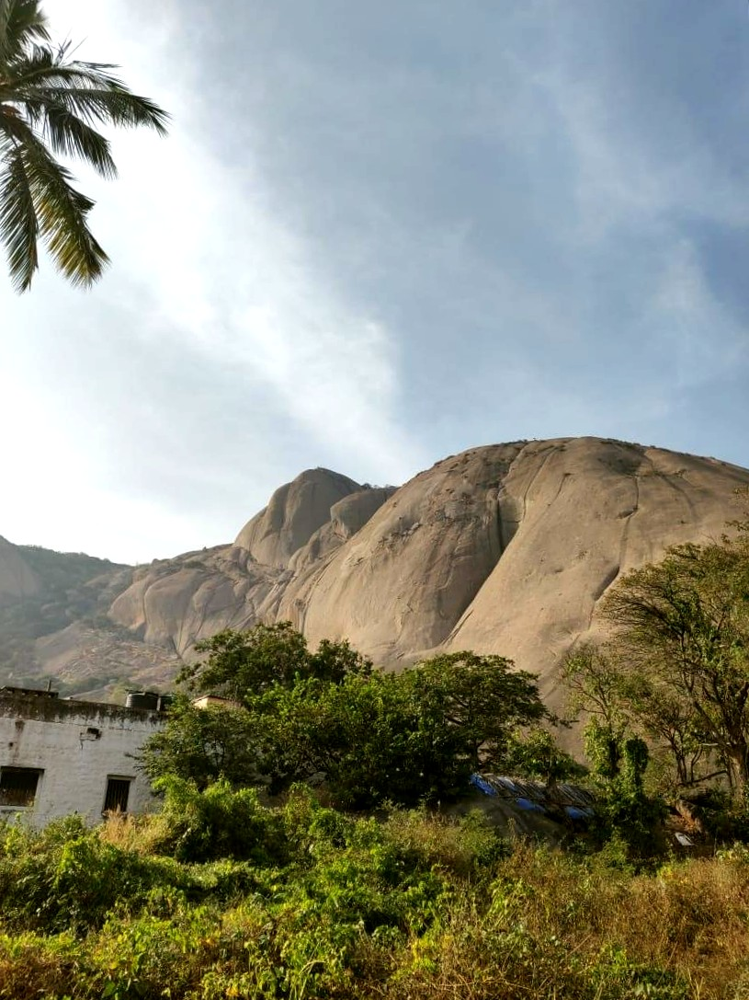
We reached Savandurga in about 90 minutes.The team was quite worried
when we saw the monolith. We were making good time, however we
wasted a decent amount of time eating stuff before we started
trekking.
The thing that makes Savandurga challenging is the gradient and the
feature. It's steep. It's a short but a very steep climb. It's also
just a rock. You are climbing on a rock. Which means that it heats up
really fast and finding traction is quite difficult. On top of that
there are not many trees on the rock, so shade is really hard to find
as well. Finding a place to sit is also a challenge since once you are
on the rock, there is a constant gradient. You are always tilted
somewhere, so even if you decide to sit down, you have to make sure
you do not slide down. Considering all this I really wanted to avoid
the afternoon sun, but by the time we started it was almost 12 when we
started.
Look at the gradient.
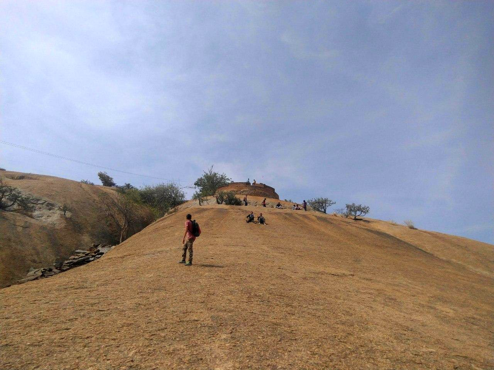
A friend got really exhausted during the climb and she decided that
she would not continue. The plan was that she would wait at a resting
spot and we would pick her up on the way down.
As we continued up, a lot of the kids wanted to give up but they kept
at it. There is a place on top of Savandurga which is just blow the
peak (we will call this the 'spot'). The entire group decided to call
it a day there and not continue till the peak itself, except Rohit and
Nikhil and I. The three of us were quite pumped about the idea and
decided to sprint to the top and come back ASAP.
In my honest opinion the trek to the top from the spot is the most
trickiest part since it has some of the more challenging
terrain. Until now we were trekking on the rock itself, but the
monolith plateaus at the spot and after that there is a section where
you walk between huge boulders, a section where you have to squeeze
between two boulders and a section just before the peak where you have
to climb a very steep boulder. It's not too tough, just challenging.
The top of Savandurga is where the temple is. The view from the top is
just amazing. You can see the Manchanabele reservoir nearby and an all
round view from the top of the largest monolith. We took a bunch of
pics here.
The view from the top. That is the temple below that we can see.
That is the Manchanbele reservoir that we can see in the back
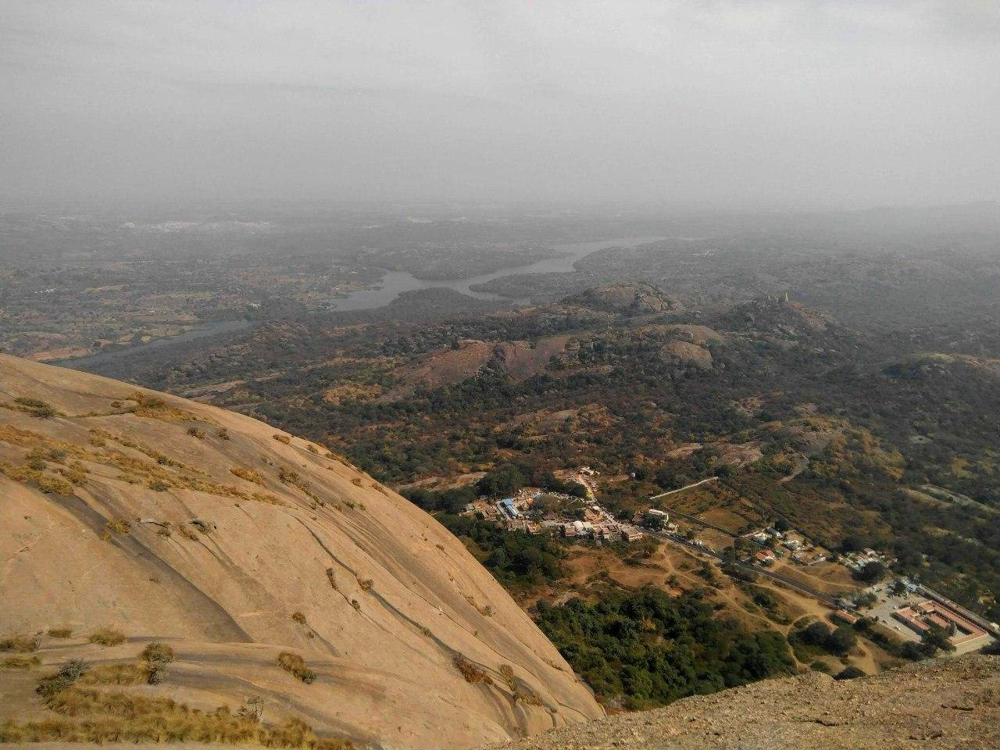
On our way back we met the friend who decided to stay back just below
the spot. She started feeling better so she decided to trek to the top
herself. It was super awesome to see her so unexpectedly. She also had
some food with her, which was very much needed. Needless to say, all
of us were very much impressed by her.
Descending was fun. I did something that I have always wanted to
do. Run down the hill. Do not do this unless you know what you are
doing. Its very very very dangerous to run down a hill which is as
steep as Savandurga.
This is how descending looks.
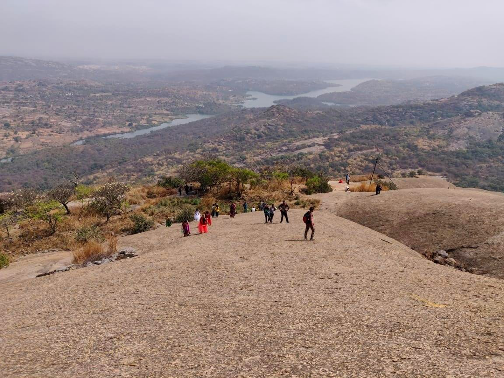
We had a mini celebration after descending from the hill. It was
fun. These folks had completed their very first trek.
This is the team.
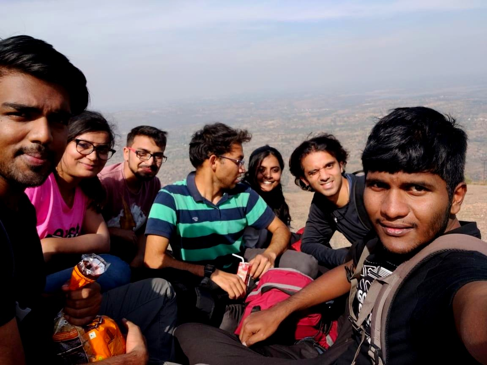
We returned to Bangalore soon enough. I took an hour long nap for the
major part of the journey back home. The others I believe took some
embarrassing photos of me sleeping.
GPX tracks and Analysis¶
I was recording both of these treks just for the heck of it.
Here are screenshots.
Kumaraparvatha
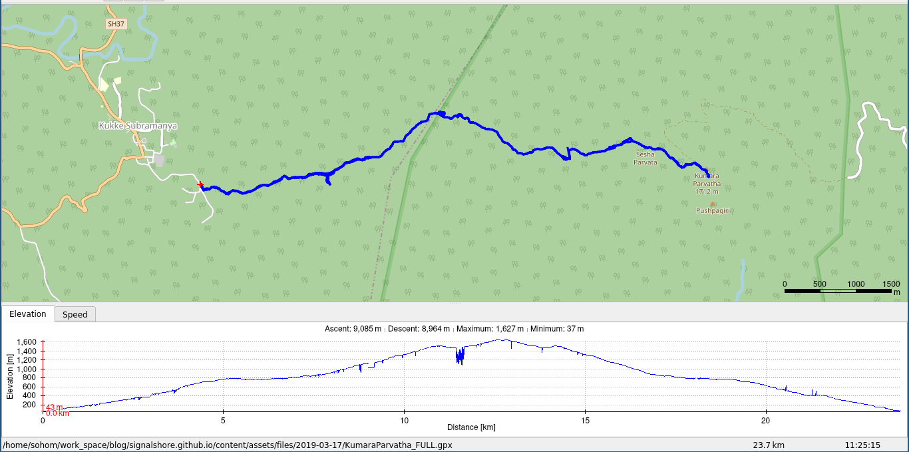
As we can see, the total time for the recording is 11 hours and 25
minutes and the total distance recorded is 23.7
kms. Here is the
GPX-track for Kumaraparvatha.
Savandurga
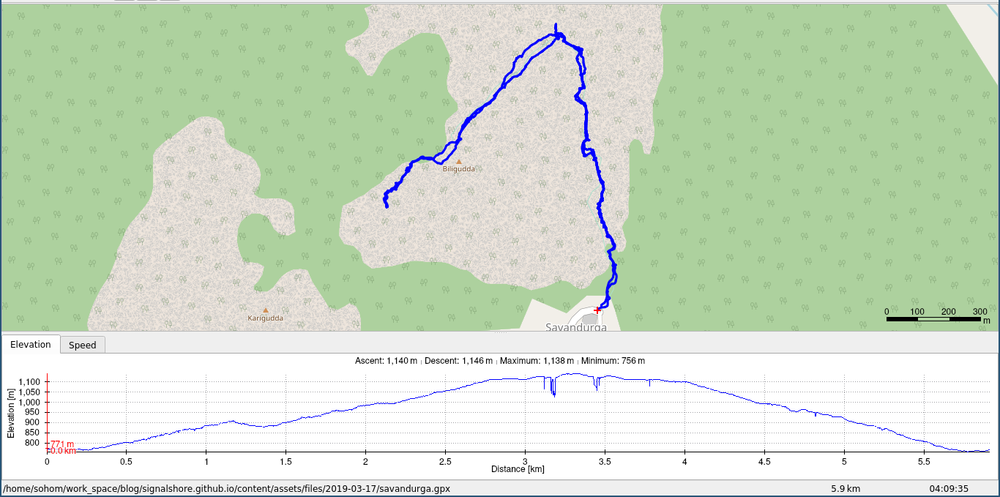
In this trek we covered 5.9 kms in about 4 hours and 9 minutes.
Here is the GPX file.
The End¶
Overall this was a fun trek. I do think I will return to
Kumaraparvatha once again after monsoon. This is the time when the
Western Ghats is in its full glory. :-)
Until then!
Oh! BTW;
This is me sleeping. Open mouth for better breathing.
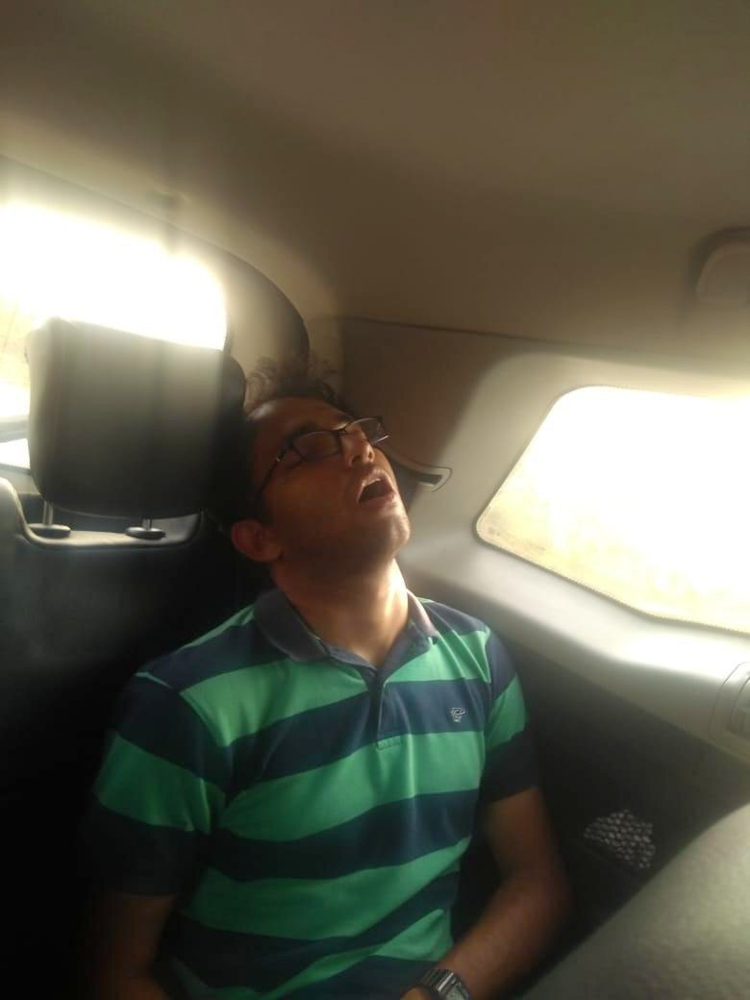